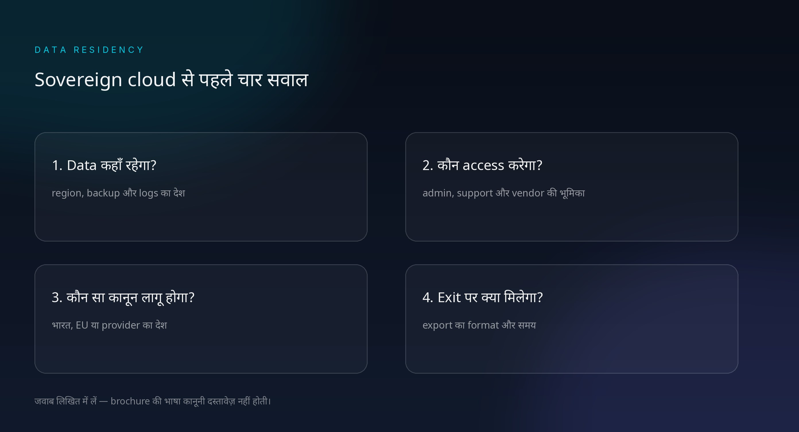

Sovereign Cloud Kya Hai? India Me Data Residency aur Rules
"हमारा data भारत में ही रहेगा" — यह वाक्य अब हर बड़े contract की पहली शर्त बन चुका है। बैंक, बीमा कंपनी, अस्पताल और सरकारी विभाग सब यही पूछते हैं। जवाब में cloud providers "sovereign cloud" जैसे शब्द इस्तेमाल करते हैं, जिसका मतलब हर कंपनी अपने हिसाब से समझाती है। इसीलिए इसे ठीक से समझना ज़रूरी है।
इस आर्टिकल में मैं बताऊँगा कि sovereign cloud क्या है और साधारण cloud से कैसे अलग है, data residency और data sovereignty में क्या फर्क है, भारत में DPDP Act और दूसरे नियमों का इससे क्या रिश्ता है, किन क्षेत्रों में यह ज़रूरी है, provider चुनते समय कौन से चार सवाल पूछने चाहिए, खर्च और trade-offs क्या हैं, और migration किस क्रम में करें।
छोटा जवाब: sovereign cloud ऐसा cloud setup है जहाँ data और उसका नियंत्रण किसी एक देश के कानून के दायरे में रहता है — storage, processing, support access और कानूनी जवाबदेही सब उसी देश के भीतर। सिर्फ "भारत में region" होना sovereign होना नहीं है; अगर support इंजीनियर दूसरे देश से आपका data देख सकता है, तो sovereignty अधूरी है।
Sovereign cloud kya hai
Sovereign cloud का मतलब है ऐसा cloud जहाँ नियंत्रण उस देश के कानून और उस देश में मौजूद संस्था के पास हो। इसमें तीन बातें शामिल होती हैं — data का भौतिक स्थान, data तक पहुँच रखने वाले लोग, और कानूनी अधिकार क्षेत्र।
एक साधारण cloud region भी भारत में हो सकता है, पर उसका support, billing और control plane किसी और देश में हो सकता है। तब भी data भारत में रहेगा, लेकिन उसे देखने और बदलने की शक्ति बाहर रहेगी। sovereign cloud इसी अंतर को पाटने का दावा करता है।
Data residency aur data sovereignty me farq
Data residency का मतलब है data किस देश की सीमा में रखा गया है। Data sovereignty का मतलब है उस data पर किस देश का कानून लागू होगा और किसकी पहुँच होगी। पहला भौतिक सवाल है, दूसरा कानूनी।
इसीलिए कई बार "data भारत में है" कहकर भी शर्त पूरी नहीं होती। अगर provider का global team बिना भारतीय मंज़ूरी के data देख सकता है, या backup कहीं और चला जाता है, तो residency कागज़ पर सही और व्यवहार में गलत हो सकती है।
| पहलू | Data residency | Data sovereignty |
|---|---|---|
| सवाल | Data कहाँ है? | उस पर किसका कानून और नियंत्रण है? |
| जाँच | Region और backup का स्थान | Support access, ownership और कानूनी दायरा |
| दस्तावेज़ | Provider का region page | Contract, DPA और audit report |
India ka context
भारत में data protection की बात Digital Personal Data Protection Act, 2023 से आगे बढ़ी है। यह कानून personal data के इस्तेमाल, सहमति और जवाबदेही के नियम बनाता है, और सरकार को यह तय करने की शक्ति देता है कि data किन देशों में भेजा जा सकता है। नियमों का ब्यौरा समय के साथ साफ होता है, इसलिए अपने case के लिए ताज़ा स्थिति जाँचें।
इसके अलावा क्षेत्र-विशेष नियम हैं। भुगतान से जुड़े system data के लिए भारतीय रिज़र्व बैंक ने कुछ साल पहले साफ किया था कि payment system का data भारत में ही संग्रहीत होना चाहिए, और प्रोसेसिंग विदेश में हो तो उसे तय समय में वापस लाना होगा। इसी तरह बाज़ार नियामक का cloud framework भी regulated संस्थाओं के लिए शर्तें बताता है।
सरकारी और सार्वजनिक सेवाओं में भी data localization की अपेक्षाएँ हैं। साथ में सुरक्षा एजेंसी की logging और retention से जुड़ी गाइडलाइन भी हैं, जिनका असर backup और log के स्थान पर पड़ता है।
किन क्षेत्रों में सबसे ज़्यादा सख्ती
- बैंकिंग, भुगतान और बीमा
- सरकारी विभाग और सार्वजनिक परियोजनाएँ
- स्वास्थ्य और अस्पताल — patient records
- दूरसंचार और कुछ हद तक ऊर्जा क्षेत्र
- जहाँ contract में ग्राहक ने खुद localization की शर्त रखी हो
इन सब में एक बात समान है — जोखिम सिर्फ कानूनी नहीं, प्रतिष्ठा का भी है। data leak की खबर के बाद ग्राहक का भरोसा वापस पाना महीनों का काम होता है।
Provider chunne ke chaar sawaal
हर provider का "sovereign" शब्द अपना मतलब रखता है। इसलिए बातचीत में चार सवाल पूछें और जवाब लिखित में लें।
- Data कहाँ रहेगा? Primary storage, backup, logs और DR — चारों का देश और शहर।
- कौन access करेगा? Support और operations की पहुँच कहाँ से होगी, और क्या भारतीय मंज़ूरी ज़रूरी है।
- कौन सा कानून लागू होगा? Contract किस देश के कानून के अधीन है और विवाद कहाँ सुना जाएगा।
- Exit पर क्या मिलेगा? Data का format, समय और सहायता — बिना अतिरिक्त शुल्क के।

Kharcha aur trade-offs
Sovereign cloud आम तौर पर साधारण cloud से महंगा पड़ता है। कारण सीधे हैं — अलग infrastructure, कम scale, और compliance के लिए अतिरिक्त प्रक्रियाएँ। जहाँ साधारण region में आप किसी भी नए service का तुरंत इस्तेमाल कर सकते हैं, वहाँ sovereign setup में हर service पहले उपलब्ध होती है, फिर मंज़ूर होती है।
दूसरा trade-off है सुविधा। Managed services की संख्या कम हो सकती है, और integration में समय ज़्यादा लग सकता है। तीसरा — नई सुविधाएँ देर से आती हैं, क्योंकि उन्हें पहले compliance जाँच से गुज़रना पड़ता है।
इसलिए सवाल यह नहीं कि sovereign ठीक है या गलत। सवाल यह है कि आपके किस workload को सच में इसकी ज़रूरत है। कई संगठन hybrid रास्ता चुनते हैं — संवेदनशील data sovereign environment में, और बाकी workload सामान्य cloud पर।
एक और खर्च अक्सर बजट से बाहर रह जाता है — audit और कानूनी समीक्षा का समय। हर नए service के लिए access नियम, data map और contract की भाषा जाँचनी पड़ती है। इसे महीने में कुछ घंटे मानकर योजना बनाएँ, वरना compliance का काम deadline के दिन इकट्ठा हो जाता है।
Kharcha kam karne ke tareeke
पहला — सिर्फ ज़रूरी data sovereign रखें। Reporting और analytics की प्रतियाँ अलग रखी जा सकती हैं, अगर नियम अनुमति दें। दूसरा — पुराने और ठंडे data को सस्ते storage tier में रखें। तीसरा — शुरुआत छोटे scope से करें, पूरे data center को एक साथ न ले जाएँ।
Migration ke 6 kadam
कदम 1 — data की सूची बनाएँ। कौन सा data किस system में है, कितना संवेदनशील है, और कौन उसे पढ़ता है। बिना इस सूची के migration अंधेरे में कूदना है।
कदम 2 — नियम जाँचें। अपने क्षेत्र के नियामक और अपने contract की शर्तें पढ़ें। कानूनी टीम को शुरुआत से शामिल करें, बाद में नहीं।
कदम 3 — workload चुनें। सबसे संवेदनशील और सबसे कम जटिल workload से शुरुआत करें। इससे अनुभव बनता है और जोखिम कम रहता है।
कदम 4 — architecture बदलें। अगर आपका system किसी ऐसी managed service पर टिका है जो sovereign environment में नहीं है, तो विकल्प पहले तय करें।
कदम 5 — समानांतर चलाएँ। कुछ समय दोनों जगह चलाएँ, नतीजे मिलाएँ और performance नापें। सीधे switch करने में गलती महंगी पड़ती है।
कदम 6 — दस्तावेज़ और audit। कौन सा data कहाँ है, इसका रिकॉर्ड बनाए रखें। audit के समय यही रिकॉर्ड काम आता है।
Sovereign cloud ke teen model
बाजार में "sovereign" शब्द के तीन अलग-अलग मतलब मिलते हैं, और कीमत तथा नियंत्रण दोनों इनमें बदलते हैं।
1. Public sovereign region
यह किसी बड़े provider का वह region है जो एक देश के अंदर है और जहाँ कुछ नियम अलग रखे गए हैं — जैसे data बाहर न जाए और support स्थानीय टीम दे। सबसे सस्ता और सबसे तेज़ शुरुआत यही है, पर नियंत्रण सीमित रहता है।
2. Dedicated private cloud
यह आपके लिए अलग किया गया infrastructure है, जिसमें access और network के नियम आप तय करते हैं। इसमें लचीलापन ज़्यादा है और दूसरों के साथ संसाधन साझा नहीं होते। खर्च बढ़ता है, पर जहाँ audit और अलगाव ज़रूरी हो, यह ठीक बैठता है।
3. Government या community cloud
यह किसी सरकारी एजेंसी या उद्योग-समूह के लिए बनाया गया environment होता है, जहाँ सदस्य संस्थाएँ तय नियमों के तहत काम करती हैं। इसमें अक्सर साझा नियंत्रण होता है और नियम कड़े।
तीनों में फैसला एक सवाल से निकलता है — आपको अलगाव कितना चाहिए और उसके लिए कितना खर्च उठा सकते हैं। ज़्यादातर संगठन पहले model से शुरू करते हैं और संवेदनशील workload के लिए दूसरे की ओर बढ़ते हैं।
Kaise verify karein
"Sovereign" दावा है, प्रमाण नहीं। इसलिए उसे जाँचने के चार ठोस तरीके हैं।
पहला — audit report। SOC 2 या ISO 27001 जैसी रिपोर्ट देखें, पर यह भी देखें कि उसका दायरा किन services पर है। कई रिपोर्ट में सिर्फ एक हिस्सा शामिल होता है।
दूसरा — data map। Provider से लिखित में लें कि primary data, backup, logs और DR कहाँ रहेंगे, और कौन सा team उन्हें देख सकता है।
तीसरा — contract की भाषा। DPA (Data Processing Agreement) में access, breach notification, sub-processor की सूची और exit की शर्तें साफ हों।
चौथा — छोटा test। एक गैर-संवेदनशील workload ले जाकर देखें कि backup, log और support वास्तव में वैसे ही काम करते हैं जैसे कागज़ पर लिखा है।
Contract me kya likhein
- Data का स्थान — primary, backup, logs, DR — अलग-अलग लिखा हो।
- Support access के लिए भारतीय मंज़ूरी और लॉग।
- Sub-processor की सूची और बदलाव की सूचना।
- Breach की सूचना कितने घंटे में मिलेगी।
- Exit पर export का format, समय और शुल्क।
- विवाद किस देश के कानून और किस अदालत में सुना जाएगा।
इनमें आखिरी बिंदु अक्सर छूट जाता है, पर संकट के समय यही सबसे ज़्यादा मायने रखता है। अगर contract के अनुसार विवाद किसी दूसरे देश की अदालत में जाएगा, तो भारत में data होने का फायदा कम हो जाता है।
5 galtiyan jo sabse aam hain
पहली — "भारत में region" को sovereignty समझ लेना। दूसरी — backup और logs को भूल जाना, जो अक्सर किसी और देश में चले जाते हैं। तीसरी — contract में exit की शर्त न लिखवाना। चौथी — कानूनी टीम को अंत में शामिल करना। पाँचवीं — पूरा system एक साथ migrate करने की कोशिश करना।
दूसरी गलती सबसे छिपी हुई है। Primary database अक्सर सही जगह रहता है, पर monitoring, log aggregation और backup अलग region में configure रहते हैं। जब audit होता है, तब पता चलता है कि data का एक हिस्सा बाहर जा रहा था।
मैंने इससे क्या सीखा
सबसे बड़ी सीख यह रही कि sovereignty एक तकनीकी feature नहीं, दस्तावेज़ों की श्रृंखला है। जिस संगठन के पास data map, DPA, access नियम और exit plan लिखित थे, उसका audit आसान रहा। जिसने सिर्फ provider के brochure पर भरोसा किया, उसे बाद में हर सवाल का जवाब इकट्ठा करना पड़ा।
दूसरी सीख — hybrid अक्सर सबसे व्यावहारिक रास्ता है। सब कुछ एक जगह ले जाने की ज़रूरत नहीं; संवेदनशील हिस्सा सुरक्षित जगह और बाकी सामान्य जगह। इससे खर्च भी नियंत्रित रहता है और टीम पर बोझ भी।
तीसरी सीख — यह फैसला हर साल बदलता है। नियम आते हैं, provider की सेवाएँ बदलती हैं, और कीमतें घटती-बढ़ती हैं। इसलिए इसे एक बार का project न मानें, बल्कि सालाना समीक्षा वाला फैसला मानें।
अक्सर पूछे जाने वाले सवाल
क्या sovereign cloud का मतलब सरकारी cloud है?
नहीं। यह निजी कंपनियों के लिए भी है। मतलब यह है कि data और नियंत्रण एक देश के कानून के दायरे में रहे, चाहे ग्राहक सरकारी हो या निजी।
क्या भारत में region होना काफी है?
केवल region काफी नहीं। Support access, backup, logs, contract का कानून और exit की शर्तें भी देखनी चाहिए।
क्या यह हमेशा महंगा होता है?
आम तौर पर हाँ, पर हमेशा नहीं। सही scope, सस्ते storage tier और hybrid design से खर्च काबू में रहता है।
क्या छोटी कंपनी को इसकी ज़रूरत है?
तभी जब उसका data संवेदनशील हो या ग्राहक contract में शर्त रखे। वरना सामान्य cloud region, अच्छे security और साफ data map से काम चल जाता है।
DPDP Act का असर क्या है?
यह personal data के इस्तेमाल और सहमति के नियम तय करता है, और cross-border transfer पर सरकार को शक्ति देता है। ब्यौरा नियमों पर निर्भर है, इसलिए अपने case के लिए ताज़ा स्थिति जाँचें।
अगर आप अपने system को इस दिशा में ले जा रहे हैं, तो legacy modernization की गाइड और private LLM setup वाला आर्टिकल मदद करेंगे। Infrastructure के basics के लिए server cluster की गाइड पढ़ें।
आगे पढ़ें: नीतियों और नियमों की ताज़ा जानकारी MeitY और भुगतान से जुड़े निर्देशों के लिए RBI की साइट पर देखें। नियम बदलते रहते हैं, इसलिए कानूनी सलाह अपने विशेषज्ञ से लें।